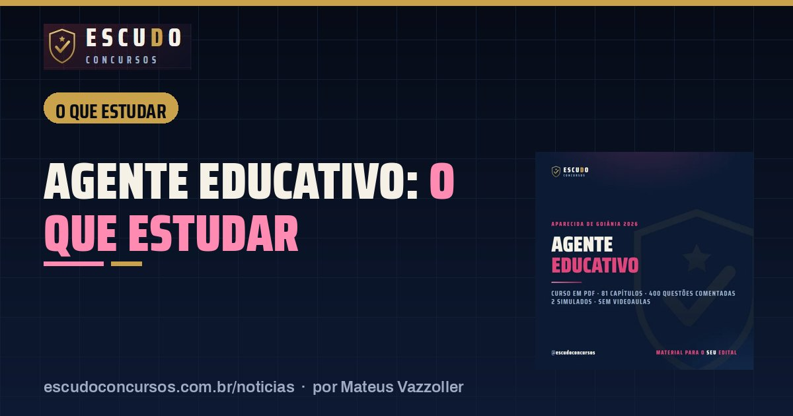

O que estudar para Agente Educativo de Aparecida de Goiânia: os 6 itens de Específicos e a conta dos 50 pontos
O que estudarPublicado em 14 de novembro de 2026 · por Mateus Vazzoller, ESCUDO Concursos

Quem vai disputar uma das 1.663 vagas de Agente Educativo da Secretaria Municipal de Educação de Aparecida de Goiânia faz uma prova só, a objetiva de 31/01/2027, e nela Língua Portuguesa e Conhecimentos Específicos valem 90 dos 100 pontos. Este guia de estudo percorre os 6 itens de Específicos do Anexo IV do edital, o Português de nível médio e o que fica de fora do programa, para você gastar as horas onde a nota está.
| Cargo | Agente Educativo, nível médio, R$ 3.070,76 por 30 horas semanais |
|---|---|
| Banca | Instituto Verbena/UFG |
| Prova | 31/01/2027 (domingo), de manhã, 4 horas |
| Formato | 40 questões de 4 alternativas, 100 pontos, sem desconto por erro |
| Para não ser eliminado | 50 pontos no total, sem mínimo por disciplina |
| Inscrições | Até 09/12/2026, às 17h (Brasília) |
Onde estão os 100 pontos da prova?
O Quadro 3 do Edital nº 01/2026 dá peso diferente a cada matéria. Uma questão de Português vale 4 pontos; todas as outras valem 2.
| Matéria | Questões | Pontos por questão | Pontos na prova |
|---|---|---|---|
| Língua Portuguesa | 10 | 4 | 40 |
| Conhecimentos Específicos | 25 | 2 | 50 |
| Raciocínio Lógico-Matemático | 3 | 2 | 6 |
| Realidade de Goiás e de Aparecida | 2 | 2 | 4 |
| Total | 40 | 100 |
Para seguir no concurso é preciso fazer pelo menos 50 pontos no total. O edital não fixa nota mínima por matéria e o erro não desconta, então nenhuma questão deve ficar em branco. Um exemplo da conta: 6 acertos em Português (24 pontos) e 13 em Específicos (26 pontos) já somam 50, sem contar Lógica e Realidade. Só que 50 pontos não garantem lugar: quem fica além de vagas mais cadastro de reserva (9.978 candidatos) é reprovado, então a meta real é bem mais alta.
O que estudar em Conhecimentos Específicos, item por item
São 25 questões sobre o dia a dia do CMEI e da escola, as mesmas tarefas que o Agente vai fazer depois da posse: receber a criança na chegada, acompanhar lanche, banho e sono, cuidar da segurança e dar apoio a quem tem deficiência. O programa tem 6 itens.
| Item do edital | O que ler | Onde a banca costuma apertar |
|---|---|---|
| 1. Ética, sigilo das informações escolares e princípios da Administração Pública | Art. 37 da Constituição (legalidade, impessoalidade, moralidade, publicidade, eficiência) | Aplicar o princípio a um caso da escola, como dado de aluno que não pode circular |
| 2. LDB e ECA | LDB (Lei nº 9.394/1996): arts. 2º e 3º, arts. 4º a 7º-B e arts. 29 a 31 (Educação Infantil). ECA (Lei nº 8.069/1990) no que toca a escola: arts. 53 a 59 e o Conselho Tutelar | Finalidade da Educação Infantil, idades de creche e pré-escola, dever de comunicar maus-tratos |
| 3. Desenvolvimento infantil e rotinas | Fases do desenvolvimento físico, cognitivo e psicossocial; acolhimento, alimentação, higiene, repouso e momento lúdico | O papel do Agente na autonomia e na socialização da criança |
| 4. Primeiros socorros e prevenção de acidentes | Engasgo, queda, corte, sangramento e convulsão; organização segura dos espaços | O que fazer primeiro e o que não fazer em cada situação |
| 5. Estatuto da Pessoa com Deficiência, TEA e TDAH | Lei nº 13.146/2015, Livro I, Título II, Capítulo IV (arts. 27, 28 e 30; o art. 29 foi vetado) | Apoio individual na higiene, na alimentação e na locomoção; inclusão na rotina da turma |
| 6. Lei Orgânica de Aparecida de Goiânia | Seção Única do Título VIII (servidores) e Seção III do Capítulo I do Título VII (educação) | Leitura da letra da lei, em texto atualizado com as emendas |
Três observações que mudam o plano de estudo:
- Os itens 3 e 4 não citam lei. O edital pede conhecimento prático, e a resposta certa costuma ser a que protege a criança. A Lei nº 13.722/2018 (Lei Lucas), que trata de capacitação em primeiros socorros nas escolas, ajuda como apoio, mas não está no programa.
- A LDB cai em recortes. O Agente estuda os Títulos II e III e a seção da Educação Infantil. O Título IV (organização da educação nacional) e o restante do Título V ficam com o programa do professor PE-I.
- A Lei Orgânica é o único texto municipal do programa. Os estatutos dos servidores e do magistério de Aparecida regem o cargo depois da posse, mas não constam do conteúdo da prova. Baixe a Lei Orgânica com as emendas no site da Câmara Municipal antes de estudar.
O que cai em Língua Portuguesa de nível médio?
São 10 questões de 4 pontos: cada acerto aqui vale dois de Específicos. O programa do Agente tem 15 itens, e alguns só aparecem no nível médio, não no do professor.
| Bloco | Itens do programa |
|---|---|
| Leitura | Gêneros textuais, compreensão e interpretação, sequências textuais (inclusive a expositiva), tipos de argumento |
| Sentido | Polissemia, ironia, comparação, ambiguidade, citação, inferência e pressuposto; coesão e coerência |
| Gramática | Classe de palavras, formação de palavras, coordenação e subordinação, concordância e regência |
| Escrita | Pontuação, acentuação e ortografia oficial |
| Só no nível médio | Variação linguística (estilística, sociocultural, geográfica, histórica), formação de palavras e acentuação |
Comece pela interpretação de texto, base de boa parte dos itens de leitura e sentido, e reserve uma sessão por semana para acentuação e pontuação, que são pontos rápidos de ganhar.
E Raciocínio Lógico e Realidade de Goiás?
As duas somam 5 questões e 10 pontos. Em Lógica (3 questões), priorize proporção, regra de três e porcentagem (itens 3 a 5 do programa) e proposições com tabela-verdade (itens 1 e 8). Em Realidade (2 questões), o programa vai de fome e epidemias até a formação histórica de Goiás e de Aparecida. Leia um resumo da história e da geografia do município e do estado e não tente cobrir tudo.
Como dividir o tempo de estudo?
Uma divisão que segue o peso de cada matéria na nota:
| Matéria | Parte do tempo semanal | Por quê |
|---|---|---|
| Conhecimentos Específicos | 50% | 50 pontos e o 1º critério de desempate depois da objetiva |
| Língua Portuguesa | 30% | 40 pontos em só 10 questões |
| Raciocínio Lógico-Matemático | 15% | Conteúdo de cálculo pede treino com questões |
| Realidade de Goiás e de Aparecida | 5% | 2 questões, leitura de resumo |
No desempate, depois da idade de 60 anos ou mais e da nota da objetiva, vem a nota de Específicos e depois a de Português: mais um motivo para a ordem da tabela. O curso Agente Educativo de Aparecida de Goiânia segue esse programa capítulo a capítulo, com questões comentadas e simulados no formato da prova.
Curso ESCUDO Agente Educativo de Aparecida de Goiânia em PDF: 81 capítulos e 400 questões comentadas, 2 simulados no formato da prova, de acordo com o edital. De R$ 47 por R$ 37 com o cupom AGENTE37 até 09/12/2026.
Ver o curso
Perguntas frequentes
Quantas questões tem a prova de Agente Educativo de Aparecida de Goiânia?
São 40 questões de múltipla escolha com 4 alternativas, 100 pontos no total, numa prova de 4 horas na manhã de 31/01/2027.
Qual matéria vale mais na prova?
Conhecimentos Específicos, com 25 questões e 50 pontos. Língua Portuguesa vem logo atrás, com 10 questões e 40 pontos, porque cada questão vale 4 pontos.
Quais leis caem para Agente Educativo?
LDB (recortes dos Títulos II, III e da Educação Infantil), ECA no contexto escolar, Estatuto da Pessoa com Deficiência (capítulo do direito à educação) e a Lei Orgânica de Aparecida de Goiânia, além dos princípios da Administração Pública.
Leia também
- NotíciaConcurso Educação de Aparecida de Goiânia: inscrições abrem 09/11 e a isenção da taxa vai só até 11/11
9 de novembro de 2026 · Inscrições do concurso da Educação de Aparecida de Goiânia abrem em 09/11 no Instituto Verbena/UFG. Isenção da taxa só até 11/11. Veja prazos, taxas e vagas.
Guia completo do concurso: edital, vagas e o que cai · Mais notícias e dicas de concursos